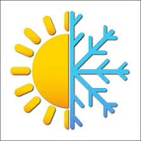

Forte de ses 66 années d’expérience, l’association « NEIGE ET SOLEIL »
à pour but est de contribuer à l'épanouissement de la personnalité de ses adhérents et de favoriser leur insertion harmonieuse dans la vie sociale par l'organisation de séjours, stages, voyages et autres activités alliant les loisirs et la pédagogie axée sur l'autonomie, la responsabilité et la solidarité.
Nous sous-louons appartements, chalets et chalets de prestige dans la vallée du Queyras. Via notre site, vous aurez également la possibilité de louer des matériels de montagne pour le ski et la randonnée.

Le mot du Président Neige et Soleil est une association à but non lucratif qui a toujours eu pour mot d'ordre: "Les adhérents d'abord". Il y a de cela 66 ans, mon grand-pére, Jacques Martin, eu l'idée de faire découvrir au plus grand nombre la beauté du Queyras en proposant une formule révolutionnaire pour l'époque: Le tout en un. Et depuis lors, le succès est au rendez-vous. Chaque année, de plus en plus de voyageurs nous font confiance pour leur vacances aussi bien en hiver qu'au printemps.
2017, est un tournant dans l'histoire de l'association qui se tourne vers les nouvelles technologies de communication pour pouvoir enfin être à l'écoute de tous ses adhérents. Neige et Soleil n'existe que dans l'optique de vous satisfaire. Alors ce nouveau site nous permettra de répondre à chacune de vos attentes.
Merci de votre confiance !
Yves Martin